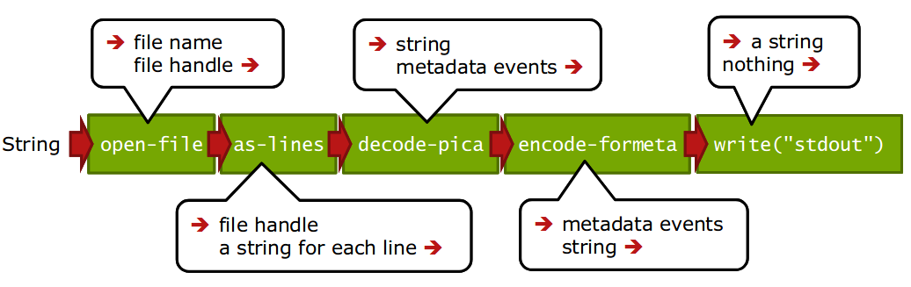

Datentransformation mit Metafacture – Aktuelle Entwicklungen
Adrian Pohl &
Fabian Steeg
Offene Infrastruktur,
Hochschulbibliothekszentrum NRW (hbz)
KIM Workshop,
WWW, 2. Mai 2022

Agenda
- Kontext: Datentransformation
- Was ist Metafacture?
- Metafacture-Fix
- Metafacture Playground
- Ausblick
- Fragen & Diskussion
1. Kontext: Datentransformation
Anwendungsszenarien
Datenanalyse, z.B. Feldabdeckung im Katalog
Datenaufbereitung, z.B. zur Visualisierung mit Kibana
Datenanreicherung, z.B. Ergänzung von Daten aus Wikidata
Datenaggregation aus unterschiedlichen Quellen, z.B. OERSI
Systemmigration, z.B. nach Alma oder Folio
Annahmen
Transformationen von Metadaten gehören zum täglichen Geschäft wissenschaftlicher Bibliotheken.
Es gibt viele unterschiedliche Methoden, die meist Programmierkenntnisse voraussetzen.
Datentransformationen werden meist im Zusammenspiel von Fachabteilungen & IT umgesetzt, verbunden mit größeren Kommunikationsaufwand.
Bereits existierende, von anderen entwickelte Transformationsprozesse können nur bedingt entdeckt und nachgenutzt werden.
Das heißt:
Es gibt großes Potential, eine immer wiederkehrende Arbeit zugänglicher, kollaborativer und effizienter zu gestalten.
Übergeordnete Ziele
Ermächtigung der Fachebene zur Konfiguration von Datentransformationen
Förderung von Praktiken zum Teilen und Auffinden von Transformationsprozessen
2. Was ist Metafacture?
Was ist Metafacture?
[...] zur Verarbeitung von semi-strukturierten Daten mit dem Fokus auf Bibliotheksdaten
Ein vielseitiges Werkzeug: nutzbar als Kommandozeilentool, als Java/JVM library, für Batch-Verarbeitung oder on-the-fly
Ein offenes Framework: Wiederverwendung und Austausch (von einzelnen Modulen und ganzen Workflows)
Metafacture-Historie
2011: Start der Entwicklung durch DNB im Rahmen von Culturegraph; damals schon Austausch mit dem hbz
2013: Umzug auf GitHub, Open-Source-Projekt geworden
2019: Mit der Zeit immer weniger DNB-Ressourcen für Metafacture, hbz wird Maintainer
Ende 2020: Start der Projekte Metafacture Fix und Metafacture Playground
Wie Metafacture funktioniert
Grundidee: Daten fließen durch mehrere Module:
→ read → decode
→ transform → encode → write →
Jedes Modul erwartet Input eines bestimmten Typs und erzeugt Output eines bestimmten Typs
Verschiedene Formate werden unterstützt (z.B. PICA, MARC), erweiterbares Framework für eigene Formate
Durch Kombination einzelner Module, durch die unsere Daten fließen, bauen wir den Workflow
Ein Workflow
Aus: Christoph Böhme, http://swib.org/swib13/slides/boehme_swib13_131.pdf
Workflows konfigurieren und ausführen
Workflows können in Flux (einer speziellen Konfigurationssprache) oder mit Java (typsicher über Java Generics) bearbeitet werden
Flux-Workflows können in einem Texteditor editiert und auf der Kommandozeile ausgeführt werden, Java-Workflows funktionieren wie andere Java-Komponenten
Workflow-Beispiel
Ausgabe des Inhalts von bib-data.pica.gz als Formeta
$ gedit sample1.flux &
"bib-data.pica.gz"
|open-file|as-lines|decode-pica|encode-formeta|write("stdout");
$ flux.sh sample1.flux
https://github.com/hbz/metafacture-flux-examples/tree/master/sample1
Workflow-Beispiel
Ausgabe des Inhalts von bib-data.pica.gz als Formeta
$ gedit sample1.flux &
"bib-data.pica.gz"
|open-file
|as-lines
|decode-pica
|encode-formeta(style="multiline")
|write("stdout");
$ flux.sh sample1.flux
https://github.com/hbz/metafacture-flux-examples/tree/master/sample1
Transformationsmodul
Manipulation von Feldnamen und -werten; filtern, kombinieren, normalisieren etc.
Feldwerte aus Lookup-Tabellen in externen Dateien (z.B. Freitextfelder -> kontrollierte Vokabulare)
Morph: XML-basiert, Feld- / Metadaten-Event-Ebene
Fix: eigene, Catmandu-Fix-artige Sprache, Record-basiert
Morph
1{a: Faust, b {n: Goethe, v: JW}, c: Weimar}
2{a: Räuber, b {n: Schiller, v: F}, c: Weimar}
<?xml version="1.0" encoding="UTF-8"?>
<metamorph xmlns="http://www.culturegraph.org/metamorph" xmlns:xsi="http://www.w3.org/2001/XMLSchema-instance" version="1">
<rules>
<data source="_id" name="id"/>
<data source="a" name="title"/>
<combine value="${first} ${last} aus ${place}" name="author">
<data source="b.v" name="first" />
<data source="b.n" name="last" />
<data source="c" name="place" />
</combine>
</rules>
</metamorph>
{"id":"1", "title":"Faust", "author":"JW Goethe aus Weimar"}
{"id":"2", "title":"Räuber", "author":"F Schiller aus Weimar"}
3. Metafacture Fix
Metafacture-Fix: Ziele
Wechsel von einem Feld-basierten zu einem Record-basierten Verarbeitungsansatz bei der Transformation
Anknüpfung an existierende Konfigurationssprache aus Catmandu (mittelfristiges Ziel: Standardisierung)
Erleichterung der Transformationskonfiguration
Vergrößerung der Zielgruppe um Bibliothekar*innen und andere Metadatenfachleute
Fix
1{a: Faust, b {n: Goethe, v: JW}, c: Weimar}
2{a: Räuber, b {n: Schiller, v: F}, c: Weimar}
move_field(_id, id)
move_field(a, title)
paste(author, b.v, b.n, '~aus', c)
retain(id, title, author)
{"id":"1", "title":"Faust", "author":"JW Goethe aus Weimar"}
{"id":"2", "title":"Räuber", "author":"F Schiller aus Weimar"}
4. Metafacture Playground
Metafacture Playground
https://metafacture.org/playground
webbasierte Oberfläche zum Herumspielen
für Tutorials, Workshops, Dokumentation
5. Ausblick
Community vergrößern
Metafacture hbz-intern als zentrales Tool etablieren
Weitere Nutzer:innen und Mitentwickler:innen innerhalb und außerhalb des hbz-Verbunds gewinnen
Standards nutzen und aufbauen
SKOS Lookups (zum Andocken an SkoHub Vocabs)
Unterstützung der Reconciliation API
Fix-Standardisierung
ETL Hub
ETL: Extract, Transform, Load
mehr Kollaboration, Teilen & Auffinden von Workflows ermöglichen (nicht nur für Metafacture)
Entwicklung von Best Practices zur Paketierung und Beschreibung von ETL-Konfigurationen
Aufbau eines ETL Hubs zum Entdecken existierender ETL-Prozesse für die einfache Nachnutzung und Anpassung
6. Fragen und Diskussion